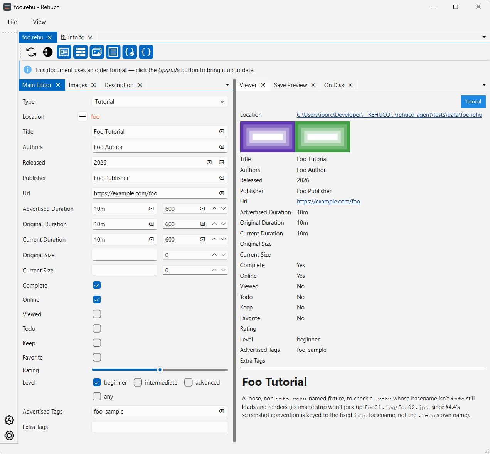

rehuco


A personal media catalog for the things you collect to learn from and work with — video tutorials, online courses, archives of reference images. Today it is the part that comes first: a desktop editor for a resource's details, not for the media itself.
Those details live in a small JSON file — a .rehu — sitting in the folder next to the resource it
describes, one per resource. That's the whole storage model, and the name is its stem.
How it works is one page on the whole system as it stands: the file, the rules that keep it trustworthy, the app's panels, and what isn't built.

What it does
- Edits a resource's details. Open a
.rehufrom the file manager or from the app: title, authors, publisher, release date, URL, durations, sizes, rating, level, tags, flags, and a Markdown description. - Shows its screenshots. A thumbnail strip beside the fields — click one to fill the window, arrow keys or the wheel to move through the set, and pick which of them the strip shows.
- Converts legacy
.tccatalogs. Reads the older format, writes.rehu, and keeps backups it can roll back if the conversion goes wrong. - Doesn't damage what it doesn't understand. Unrecognized fields survive a save untouched, and a file written by a newer version of the format opens read-only rather than being rewritten.
- Keeps your workspace. Atomic saves, and each file's panel layout remembered between sessions.
Self-describing by design: a .rehu sits next to the content it describes, so reading a resource's
details needs nothing but the file itself — no index, no server, no account.
Tested on Windows, macOS, and Linux.
Where it's going
The editor plus a basic browser is the part worth finishing: the remaining editor work (a reference-images resource type, a log dock and task queue, tray and preferences), and then a view over a folder of resources — a rebuildable cache with search, so a collection can be looked through rather than opened one file at a time. See the implementation plan.
Past that point the design reaches further — playback with progress tracking, a headless node with a REST API, sync and offline borrowing between machines, multi-user access rules, a browser interface, Daz3D library migration. None of it is implemented, none of it is scheduled, and some of it may never be: it is what the architecture is shaped to allow, and each piece has to earn its place when its turn comes. The design specs explore that territory in depth — as intent, not as a description of the current build.
Maintenance is tracked separately in audit-run milestones X1, X2, … — each collects the issues
found during the N-th codebase audit.
rehuco packages
rehuco is published as three separate packages on PyPI, all at an early stage — published so the names are taken and the release plumbing is exercised, not because they are ready to depend on.
| Package | Description | PyPI | Downloads | Python |
|---|---|---|---|---|
| rehuco-agent | PySide6 desktop GUI |  |
 |
|
| rehuco-core | Shared library: models, .rehu I/O, legacy .tc reading |
 |
 |
|
| rehuco-node | A reserved name; no service written yet |  |
 |
Generic libraries (temporarily hosted)
Two generic, reusable libraries under the author's borco namespace are not rehuco-specific. They are
developed in this monorepo for now and will later move to their own repository. If you install them from PyPI,
that move is handled automatically.
| Package | Description | PyPI | Downloads | Python |
|---|---|---|---|---|
| borco-core | Generic reusable classes with no GUI dependency |  |
 |
|
| borco-pyside | Generic reusable PySide6/Qt classes (e.g. ApplicationSingleton) |
 |
 |